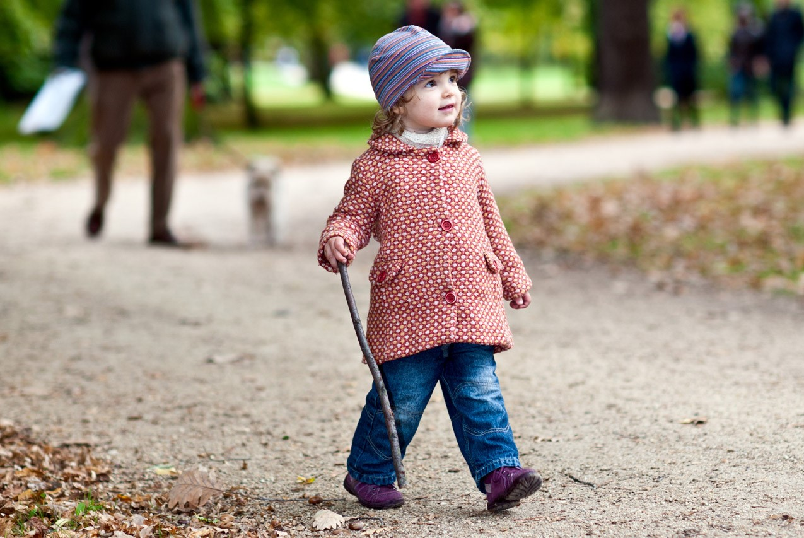
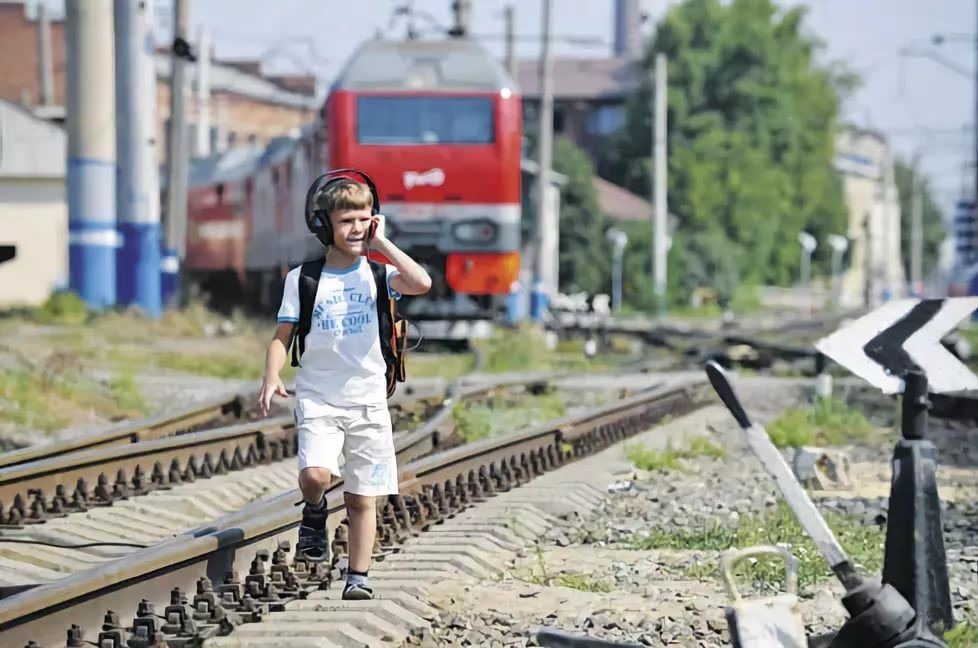
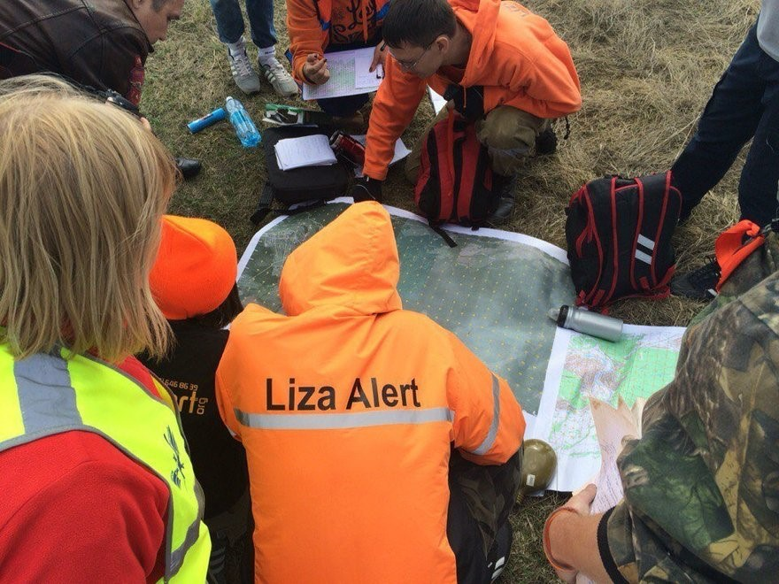

ЧТОБЫ РЕБЕНОК НЕ ПРОПАЛ
1. Не отпускайте ребенка одного.
2. Постройте маршруты ребенка так, чтобы по пути не было опасных объектов.
3. Приучите ребенка сообщать Вам, когда он выходит из школы, пришел домой или к другу.
4. Не бойтесь привлекать к поискам как можно больше людей.
|

|
Разъясните ребёнку: |
|

|
Пройдите с ребенком маршрутом, по которому он будет ходить один, столько раз, сколько потребуется для того, чтобы он четко запомнил, что ходить нужно только так. Засеките время, которое уходит у ребенка на прохождение этого маршрута. |
|
|
Очень важно понимать, где находится Ваш ребенок в тот или иной момент, поэтому научите его сообщать вам о своих перемещениях. Также можно установить на телефон ребенка программу, отслеживающую местоположение телефона (есть у всех операторов «Большой четверки»), или приобрести ребенку GPS-часы. |
|

|
Если Ваш ребенок не вернулся домой вовремя, это повод начать беспокоиться. Обзвоните всех, у кого он может задержаться, к кому может зайти по пути. Проверьте все возможные места нахождения. Если найти ребенка не получилось самостоятельно, то сразу же сообщите о случившемся в полицию. |
Источник и подробная информация о действиях на сайте:
http//www.littleone.com
ТЕЛЕФОН СЛУЖБЫ СПАСЕНИЯ: 112